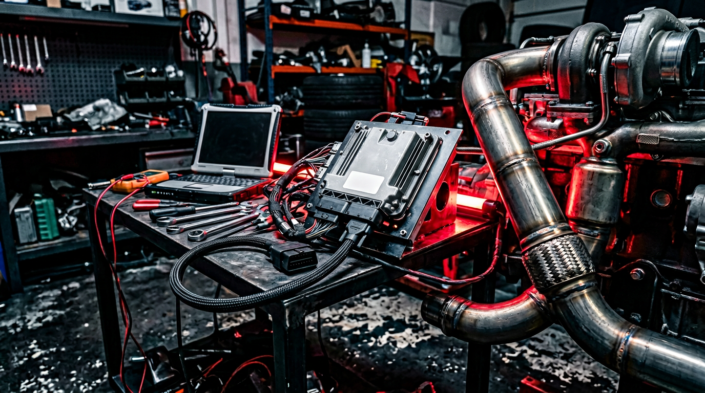

La vanne EGR (recirculation des gaz d’échappement) renvoie une partie des gaz brûlés vers l’admission pour limiter les NOx. Elle s’encrasse rapidement et peut provoquer perte de puissance, fumées et pannes. La désactivation EGR chez AUTOTECH consiste en une reprogrammation (EGR OFF) qui retire du calculateur toutes les stratégies liées à l’EGR : plus d’ouverture de la vanne, plus de voyant, plus de calamine dans l’admission.
Nous intervenons sur la majorité des moteurs diesel et essence équipés d’EGR, avec des outils professionnels et des cartographies éprouvées.
